Intro to Spatial Data
Introduction
In this notebook we will introduce loading, pre- and post-processing, clustering and cell typing for a VisiumHD dataset.
Loading data
Here we load an already processed object downloaded from 10X genomics:
The full dataset is quite large, and so the next few code chunks are for demonstration purposes only. We will subset this object, which is what you will load later. Skip to the hands-on section to load the zoomed in object and proceed.
Expand the code below to see how you would load and pre-process output from VisiumHD before saving a Seurat object.
Code
# Set the directory where the data are
dirs <- c("raw_data/Visium_HD_Breast_dataset_CRI/Output_Files/")
# Path to save individual processed Seurat objects
outs_path <- "objects/"
# Load individual sample
object <- Load10X_Spatial(data.dir = dirs, bin.size = c(8))
# Assign metadata
object$orig.ident <- "Visium_10X_breast_cancer"
object$sample_name <- "Visium_DCIS"
Idents(object) <- "sample_name"
# Compute mitochondrial percentage
object[["MT.percent"]] <- PercentageFeatureSet(object, pattern = "^MT-")
# Perform some initial data normalization and find variable features
DefaultAssay(object) <- "Spatial.008um"
object <- NormalizeData(object)
# Save the full object
saveRDS(object, file.path(outs_path, "Visium_DCIS.rds"))For the purposes of the tutorial we subset the dataset to smaller section of tissue to save size and computational time. This code is not relevant to the course, but is available below if you are interested
Code
# Coordinates to zoom in to
coordinates <- GetTissueCoordinates(object)
min_x <- 14000
max_x <- 17500
min_y <- 15000
max_y <- 18500
subset_condition <- (coordinates$x > min_x) & (coordinates$y > min_y) & (coordinates$y < max_y) & (coordinates$x < max_x)
DCIS_zoom <- subset(object, cells = which(subset_condition))
# Remove completely empty bins
DCIS_zoom <- DCIS_zoom[, DCIS_zoom$nCount_Spatial.008um > 0]
# Update the seurat object to ensure object validity
DCIS_zoom <- UpdateSeuratObject(DCIS_zoom)
saveRDS(DCIS_zoom, file = "objects/Visium_DCIS_zoomed.rds")Hands On Section
We will start the hands on section here by loading the zoomed in VisiumHD tissue section prior to further downstream and plotting
object <- readRDS("objects/Visium_DCIS_zoomed.rds")Let’s take a look at this object
objectAn object of class Seurat
18085 features across 19823 samples within 1 assay
Active assay: Spatial.008um (18085 features, 0 variable features)
2 layers present: counts, data
1 spatial field of view present: slice1.008umLet’s also set up some defaults that can be used throughout the downstream processing
# This sets the size of points in the spatial plots
pt_size_factor <- 13
# Color defaults for clusters
distinct_palette <- c(
"0" = "#1f77b4",
"1" = "#ff7f0e",
"2" = "#2ca02c",
"3" = "#d62728",
"4" = "#9467bd",
"5" = "#8c564b",
"6" = "#ff99cc",
"7" = "#7f7f7f",
"8" = "#bcbd22",
"9" = "#17becf",
"10" = "#393b79",
"11" = "#637939",
"12" = "#8c6d31"
)
# Cell type colors
celltype_cols <- c(
"CD8.T.cells" = "green4",
"CD4.T.cells" = "blue",
"B.cell" = "#F781BF",
"Plasma" = "#FF7F00",
"Monocytes" = "purple",
"Macrophages" = "#b15928",
"DCs" = "#17becf",
"Endothelial.cells" = "#E41A1C",
"CAF" = "#984ea3",
"Basal_Myoepithelial" = "mediumseagreen",
"Epithelial.cells" = "#fdbf6f",
"Fibroblasts" = "darkgrey",
"Luminal.progenitor" = "navy",
"Luminal.mature" = "#bcbd22",
"Tumor" = "magenta",
"NK.cells" = "lavender",
"Mast.cells" = "green2",
"Adipocytes" = "lightgrey",
"Other" = "lightgrey"
)
epi_type_cols <- c(
"Basal_Myoepithelial" = "mediumseagreen",
"Luminal.progenitor" = "navy",
"Luminal.mature" = "#bcbd22",
"Tumor" = "magenta"
)We can plot some quality metrics like total counts, genes detected, and mitochondrial gene count per bin:
counts_violin <- VlnPlot(
object,
features = "nCount_Spatial.008um",
pt.size = 0,
raster = FALSE
) +
NoLegend()
counts_spatial <- SpatialFeaturePlot(
object,
features = "nCount_Spatial.008um",
pt.size.factor = pt_size_factor,
image.alpha = 0.8,
alpha = c(1, 1)
) +
theme(legend.position = "right")
genes_violin <- VlnPlot(
object,
features = "nFeature_Spatial.008um",
pt.size = 0,
raster = FALSE
) +
NoLegend()
genes_spatial <- SpatialFeaturePlot(
object,
features = "nFeature_Spatial.008um",
pt.size.factor = pt_size_factor,
image.alpha = 0.8,
alpha = c(1, 1)
) +
theme(legend.position = "right")
mt_violin <- VlnPlot(
object,
features = "MT.percent",
pt.size = 0,
raster = FALSE
) +
NoLegend()
mt_spatial <- SpatialFeaturePlot(
object,
features = "MT.percent",
pt.size.factor = pt_size_factor,
max.cutoff = "q99",
image.alpha = 0.8,
alpha = c(1, 1)
) +
theme(legend.position = "right")
# Combine the plots using 'patchwork'
p0 <- (counts_violin | counts_spatial) /
(genes_violin | genes_spatial) /
(mt_violin | mt_spatial)
p0
Quality filtering
Here we filter to keep only bins with less than 25% mitochondrial counts, 10 total counts, and 10 total genes detected per 8um bin.
# UMI and Gene Threshold
object$QCFilter <- ifelse(
object$MT.percent < 25 &
object$nCount_Spatial.008um > 10 &
object$nFeature_Spatial.008um > 10,
yes = "Keep", no = "Remove"
)
table(object$QCFilter)
Keep Remove
19102 721 Take a look at the low quality bins using SpatialDimPlot()
p1 <- SpatialDimPlot(object,
group.by = "QCFilter",
pt.size.factor = pt_size_factor,
image.alpha = 0.2,
alpha = c(1, 0.2)
) +
guides(fill = guide_legend(override.aes = list(size = 4)))
counts_spatial | p1Filter our object for only high quality bins
keep_cells <- colnames(object)[object$QCFilter == "Keep"]
object <- subset(object, cells = keep_cells)
# We find variable features and scale after quality filtering
object <- FindVariableFeatures(object)
object <- ScaleData(object)Now take a look at our object
objectAn object of class Seurat
18085 features across 19102 samples within 1 assay
Active assay: Spatial.008um (18085 features, 2000 variable features)
3 layers present: counts, data, scale.data
1 spatial field of view present: slice1.008umClustering
Banksy
Above, we normalized the counts, and found the variable features as you would in a normal scRNA analysis workflow using Seurat. However, in spatial data, we use clustering methods like Banksy which make use of the spatial information when defining clusters. Check the documentation for the RunBanksy() command for more information.
# Run Banksy
object <- RunBanksy(object,
lambda = 0.8,
assay = "Spatial.008um",
slot = "data",
features = "variable",
k_geom = 24,
verbose = TRUE
)If we look at the object we now see that the active assay is set to BANKSY
objectAn object of class Seurat
22085 features across 19102 samples within 2 assays
Active assay: BANKSY (4000 features, 0 variable features)
2 layers present: data, scale.data
1 other assay present: Spatial.008um
1 spatial field of view present: slice1.008umNow we RunPCA() on the BANKSY assay.
Look at the elbow plot to help determine the k for RunPCA()
ElbowPlot(object, reduction = "pca.banksy")
Normally we use the above plot to determine the number of dimensions to use for downstream kNN and clustering. Here, because we’ve subset it looks like we should pick fewer than the first 15 PCs, but we’ll keep 15 since it won’t make a difference in downstream analysis.
Similar to conventional scRNA analysis, we now run FindNeighbors(), FindClusters(), and then RunUMAP()
object <- FindNeighbors(object,
reduction = "pca.banksy",
dims = 1:15
)
object <- FindClusters(object,
cluster.name = "banksy_cluster",
resolution = 0.3
)Modularity Optimizer version 1.3.0 by Ludo Waltman and Nees Jan van Eck
Number of nodes: 19102
Number of edges: 496475
Running Louvain algorithm...
Maximum modularity in 10 random starts: 0.9067
Number of communities: 8
Elapsed time: 1 secondsobject <- RunUMAP(object,
reduction = "pca.banksy",
reduction.name = "umap.banksy",
return.model = T,
dims = 1:15
)Idents(object) <- "banksy_cluster"
p2 <- SpatialDimPlot(object,
group.by = "banksy_cluster",
pt.size.factor = pt_size_factor,
label = F,
label.size = 5,
image.alpha = 0.2,
alpha = c(1, 1)
) +
scale_fill_manual(values = distinct_palette) +
ggtitle("Banksy Neighborhood Clustering") +
theme(
legend.position = "right",
legend.key.size = unit(0.5, "cm")
) +
guides(fill = guide_legend(override.aes = list(size = 5)))
DefaultAssay(object) <- "BANKSY"
Idents(object) <- "banksy_cluster"
p3 <- DimPlot(object,
reduction = "umap.banksy",
label = TRUE,
label.size = 2,
raster = FALSE
) +
scale_color_manual(values = distinct_palette) +
ggtitle("Banksy Neighborhood Clustering") +
theme(
legend.position = "right",
aspect.ratio = 1,
legend.key.size = unit(0.5, "cm")
) +
guides(fill = guide_legend(override.aes = list(size = 5)))
final_plot <- wrap_plots(p2, p3, ncol = 2)
final_plot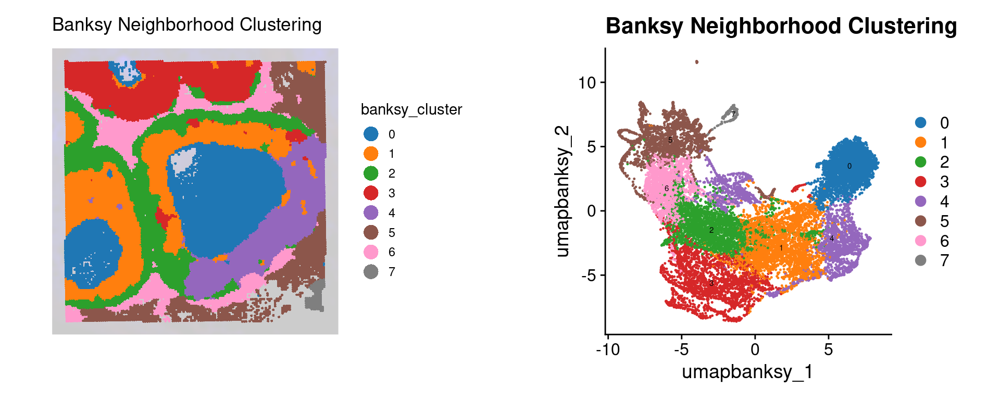
Sketching and Projection
Seurat V5 introduced the concept of data sketching. Briefly, this approach will ‘sketch’ a representative subset of your dataset (importantly preserving rare cell types), prior to performing dimensional reduction, clustering, and computing a UMAP. It then ‘projects’ the rest of your data into this reduced space so that the complete dataset can be utilized in downstream analysis.
In our example dataset we already subset to ~20,000 bins, so sketching here is just for demonstration of the code. In full VisiumHD datasets, which typically contain 500k or more bins, this is almost always required as the processing will take a very long time otherwise, and the results are typically comparable.
Unlike Banksy, this type of clustering is not spatially aware! It treats the data as you would a conventional scRNA dataset, not taking into account the spatial localization of different cell types. This isn’t inherently a bad thing, but it is important to know when interpreting the results.
DefaultAssay(object) <- "Spatial.008um"
# Sketch the dataset
object <- SketchData(
object = object,
ncells = 10000,
features = VariableFeatures(object),
method = "LeverageScore",
sketched.assay = "sketch"
)Now if we look at the object we see that the sketch assay is now active
objectAn object of class Seurat
40170 features across 19102 samples within 3 assays
Active assay: sketch (18085 features, 2000 variable features)
2 layers present: counts, data
2 other assays present: Spatial.008um, BANKSY
2 dimensional reductions calculated: pca.banksy, umap.banksy
1 spatial field of view present: slice1.008umWe proceed analyzing as we typically would for an scRNA dataset
# switch analysis to sketched cells
DefaultAssay(object) <- "sketch"
# Perform the clustering workflow
object <- FindVariableFeatures(object)
object <- ScaleData(object)
object <- RunPCA(object, assay = "sketch", reduction.name = "pca.sketch")
ElbowPlot(object, reduction = "pca.sketch")
object <- FindNeighbors(object,
assay = "sketch",
reduction = "pca.sketch",
dims = 1:15
)
object <- FindClusters(object,
cluster.name = "seurat_cluster.sketched",
resolution = 0.5
)Modularity Optimizer version 1.3.0 by Ludo Waltman and Nees Jan van Eck
Number of nodes: 10000
Number of edges: 285667
Running Louvain algorithm...
Maximum modularity in 10 random starts: 0.8110
Number of communities: 8
Elapsed time: 1 secondsobject <- RunUMAP(object,
reduction = "pca.sketch",
reduction.name = "umap.sketch",
return.model = T,
dims = 1:15
)Now that we have run the processing on the ‘sketched’ data subset, we project the rest of the data into this space
object <- ProjectData(
object = object,
assay = "Spatial.008um",
full.reduction = "full.pca.sketch",
sketched.assay = "sketch",
sketched.reduction = "pca.sketch",
umap.model = "umap.sketch",
dims = 1:15,
refdata = list(seurat_cluster.projected = "seurat_cluster.sketched")
)
objectAn object of class Seurat
40170 features across 19102 samples within 3 assays
Active assay: sketch (18085 features, 2000 variable features)
3 layers present: counts, data, scale.data
2 other assays present: Spatial.008um, BANKSY
6 dimensional reductions calculated: pca.banksy, umap.banksy, pca.sketch, umap.sketch, full.pca.sketch, full.umap.sketch
1 spatial field of view present: slice1.008umDefaultAssay(object) <- "sketch"
Idents(object) <- "seurat_cluster.sketched"
p4 <- DimPlot(object,
reduction = "umap.sketch",
label = T,
raster = F
) +
scale_color_manual(values = distinct_palette) +
ggtitle("Sketched clustering (10,000 cells)") +
theme(
legend.key.size = unit(0.5, "cm"),
aspect.ratio = 1
) +
guides(fill = guide_legend(override.aes = list(size = 5)))
# switch to full dataset
DefaultAssay(object) <- "Spatial.008um"
Idents(object) <- "seurat_cluster.projected"
p5 <- DimPlot(object,
reduction = "full.umap.sketch",
label = T,
raster = F
) +
scale_color_manual(values = distinct_palette) +
ggtitle("Projected clustering (full dataset)") +
theme(
legend.key.size = unit(0.5, "cm"),
aspect.ratio = 1
) +
guides(fill = guide_legend(override.aes = list(size = 5)))
final_plot <- wrap_plots(p4, p5, ncol = 2)
final_plot
Comparison
No we can compare the Banksy spatially aware clustering with the non-spatial aware ‘default’ Seurat clustering:
DefaultAssay(object) <- "Spatial.008um"
Idents(object) <- "seurat_cluster.projected"
p6 <- SpatialDimPlot(object,
group.by = "seurat_cluster.projected",
pt.size.factor = pt_size_factor,
image.alpha = 0.2,
alpha = c(1, 1)
) +
scale_fill_manual(values = distinct_palette) +
ggtitle("Projected clustering (full dataset)") +
theme(legend.key.size = unit(0.5, "cm")) +
guides(fill = guide_legend(override.aes = list(size = 5)))
final_plot <- wrap_plots(p2, p3, p6, p5, ncol = 2)
final_plot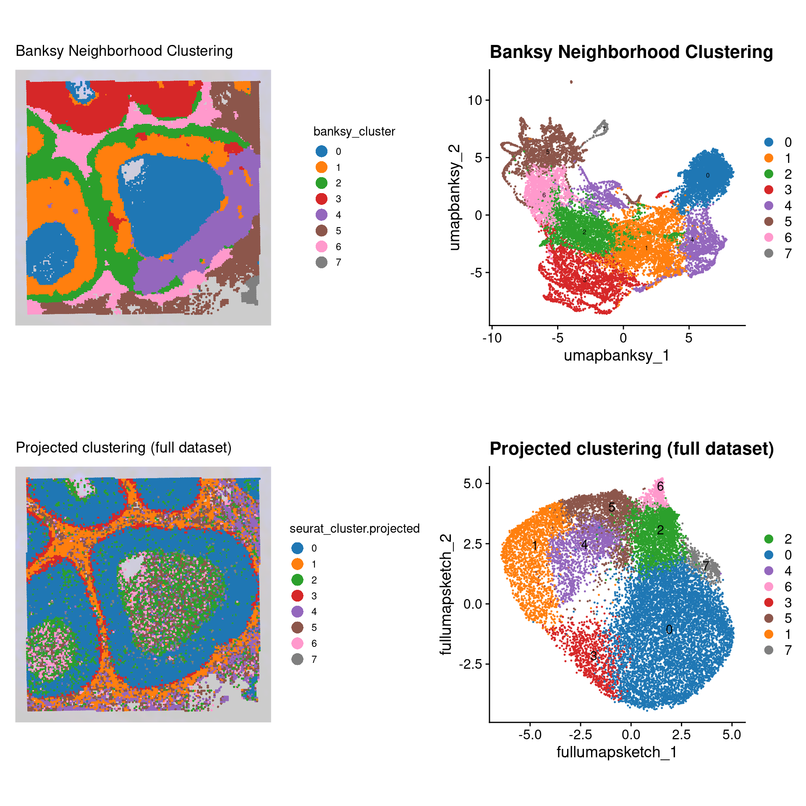
Let’s compare the cell-to-cell overlap in Banksy versus conventional clustering assignments
# Here we create a cross-table of each cluster type
prop_table <- prop.table(
table(
"Banksy" = object$banksy_cluster,
"Sketched" = object$seurat_cluster.projected
),
margin = 1
)
ComplexHeatmap::Heatmap(prop_table,
name = "Proportion",
column_title = "Sketched",
column_title_side = "bottom",
row_title = "Banksy",
row_title_side = "right",
col = viridis::cividis(10)
)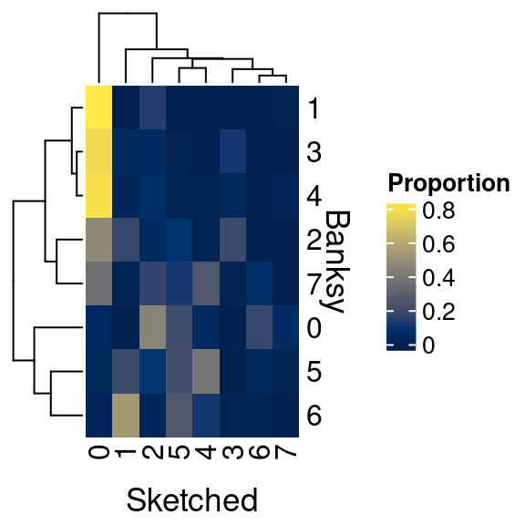
We can see that there is some overlap, but many differences as well. Why is this?
It is important to consider what we want out of spatial clustering:
- Do we want discrete cell type clusters?
- Do we want clusters of cell neighborhoods?
Many spatially aware clustering methods are being published as the field is relatively new, and technologies are constantly being improved. As such, there is not yet a gold standard approach to solving these problems. As you can appreciate, Banksy seems to preserve more of the tissue architecture, whereas the conventional Seurat approach does not utilize the spatial information. How exactly you process and interpret your own data will depend on the types of questions you seek to answer.
Cell type identification
Denovo marker identification
Now we’d like to identify the constituent cell types in our sample. This analysis proceeds according to the conventional workflow of selecting the clusters of interest, and running Seurat’s FindAllMarkers().
# Ensure the spatial count data is the active assay prior to proceeding
DefaultAssay(object) <- "Spatial.008um"
# Here we use the banksy clusters
Idents(object) <- "banksy_cluster"
banksy_markers <- FindAllMarkers(object,
assay = "Spatial.008um",
only.pos = T,
logfc.threshold = 0.4,
min.pct = 0.1,
verbose = TRUE
)Now we can plot a heatmap of the top 10 markers per cluster using Seurat’s DoHeatmap()
top_n_genes <- 5 # Select how many top genes to plot
# Select the top markers by cluster
top_genes <- banksy_markers %>%
group_by(cluster) %>%
dplyr::filter(p_val_adj < 0.05 & avg_log2FC > 1) %>%
slice_head(n = top_n_genes) %>%
ungroup()
# Scale the data for these genes
object <- ScaleData(object, assay = "Spatial.008um", features = top_genes$gene)
# Plot a heatmap using Seurat's DoHeatmap
p1 <- DoHeatmap(
# We subsample our object when we plot to 100 cells per
# banksy cluster, otherwise plot will not generate
object = subset(object, downsample = 100),
group.by = "banksy_cluster",
group.colors = distinct_palette,
assay = "Spatial.008um",
features = top_genes$gene,
raster = T,
size = 2.5
) +
scale_fill_viridis_c()
p1
We can also plot using Seurat’s DotPlot()
# Seurat's DotPlot function doesn't like duplicated genes across groups
top_n_genes <- 5 # Select how many top genes to plot
top_unique <- banksy_markers %>%
group_by(cluster) %>%
dplyr::filter(p_val_adj < 0.05 & avg_log2FC > 1) %>%
slice_head(n = top_n_genes) %>%
ungroup() %>%
distinct(gene, .keep_all = T)
top_list <- split(top_unique$gene, top_unique$cluster)
p <- DotPlot(object, features = top_list, group.by = "banksy_cluster") +
scale_color_gradient2(low = "blue", high = "red") +
guides(x = guide_axis(angle = 90))
pUsing curated celltype markers
We can also load a manually curated marker list for cell types
marker_table <- read_excel("data/DCIS_genes.xlsx")
unique(marker_table$Cell.type) [1] "CD8.T.cells" "CD4.T.cells" "NK.cells"
[4] "B.cell" "Plasma" "Mast.cells"
[7] "Macrophages" "Monocytes" "DCs"
[10] "Endothelial.cells" "CAF" "Basal_Myoepithelial"
[13] "Epithelial.cells" "Fibroblasts" "Adipocytes"
[16] "Tumor" "Luminal.progenitor" "Luminal.mature" head(marker_table)# A tibble: 6 × 2
Gene Cell.type
<chr> <chr>
1 CD8B CD8.T.cells
2 CD8A CD8.T.cells
3 CD3E CD8.T.cells
4 CD3D CD8.T.cells
5 CD4 CD4.T.cells
6 CD3E CD4.T.cellsUsing this marker list, we add a score for each cell type for each cell using Seurat’s AddModuleScore, assigning cell types based on the maximum score.
# We format the markers into a list
marker_list <- split(marker_table$Gene, marker_table$Cell.type)
head(marker_list)$Adipocytes
[1] "PNPLA2" "CAV1" "FABP4" "PPARG" "CEBPA" "LEP" "CIDEA"
[8] "SHOX2" "SLC7A10" "SLC36A2" "P2RX5"
$B.cell
[1] "BANK1" "CD79A" "CD74" "MS4A1" "MEF2C" "CD19" "CD79B"
$Basal_Myoepithelial
[1] "KRT14" "DST" "MMP7" "MIR205HG" "MT1X" "OXTR" "KRT17"
[8] "FST"
$CAF
[1] "CFD" "DCN" "GSN" "EBF1" "PRKG1"
$CD4.T.cells
[1] "CD4" "CD3E" "CD3D" "SELL" "CCR7" "IL7R" "TCF7" "LEF1"
$CD8.T.cells
[1] "CD8B" "CD8A" "CD3E" "CD3D"Now we loop through each cell type within this list, and run Seurat’s AddModuleScore() to add a signature score for each cell type to the object.
# Add module scores to the Seurat object based on marker genes
for (cell_type in names(marker_list)) {
object <- AddModuleScore(
object = object,
features = list(marker_list[[cell_type]]),
name = paste0(cell_type, "_score")
)
}
# AddModuleScore appends '1' to the end of each signature
# Here we just remove the '1' appended to the column names
colnames(object@meta.data) <- gsub(
"_score1$", "_score",
colnames(object@meta.data)
)
# Grep out the names of the signature score columns for later use
score_names <- grep(
pattern = "_score",
x = colnames(object@meta.data),
value = T
)Now we can see we’ve added these signature scores to our objects metadata slot
object@meta.data[1:5, score_names[1:5]] Adipocytes_score B.cell_score Basal_Myoepithelial_score
s_008um_00594_00250-1 -0.04843953 -0.05159478 -0.08651620
s_008um_00549_00222-1 -0.04485982 -0.05245652 -0.12322605
s_008um_00543_00215-1 -0.05486628 -0.03945521 -0.13809411
s_008um_00623_00165-1 -0.02630046 -0.01333380 -0.08457084
s_008um_00622_00168-1 -0.02800082 -0.06598156 -0.11589853
CAF_score CD4.T.cells_score
s_008um_00594_00250-1 -0.06500176 -0.07717423
s_008um_00549_00222-1 -0.11179067 -0.04862343
s_008um_00543_00215-1 -0.13263827 -0.08021617
s_008um_00623_00165-1 -0.10047016 -0.03276049
s_008um_00622_00168-1 -0.12828592 -0.06733268Now we ask, for each cell, what is the maximum scoring cell signature? Assuming this score is above a lower threshold, we assign the cell to that type
# Identify the cell type for each cell based on the highest module score
object$cell_type <- apply(
X = object@meta.data[, grep("_score$", colnames(object@meta.data))],
MARGIN = 1,
FUN = function(scores) {
# If the maximum score is <0.05 we don't assign a celltype
if (max(scores) < 0.05) {
return("Other")
} else {
return(names(scores)[which.max(scores)])
}
}
)
# Clean up the '_score' suffix from the cell_type column
object@meta.data[["cell_type"]] <- gsub("_score", "", object@meta.data[["cell_type"]])
# Convert to a factor, ordered by our cell type color ordering
object$cell_type <- factor(object$cell_type, levels = names(celltype_cols))Now we can plot these cell type assignments
Idents(object) <- "cell_type"
p1 <- SpatialDimPlot(object,
group.by = "cell_type",
pt.size.factor = pt_size_factor,
label = F,
label.size = 3,
image.alpha = 0.2,
alpha = c(1, 1)
) +
scale_fill_manual(values = celltype_cols) +
ggtitle("Major Cell Types") +
theme(legend.key.size = unit(0.1, "cm")) +
guides(fill = guide_legend(override.aes = list(size = 3)))
p2 <- DimPlot(object,
reduction = "umap.banksy",
label = F,
pt.size = 0.05,
raster = F # For large datasets set to T
) +
scale_color_manual(values = celltype_cols) +
ggtitle("Major Cell Types") +
theme(
legend.key.size = unit(0.2, "cm"),
aspect.ratio = 1
)
final_plot <- wrap_plots(p1, p2, ncol = 2)
final_plotWe can look at the proportion of cell types within each Banksy cluster.
object@meta.data %>%
ggplot(aes(x = banksy_cluster)) +
geom_bar(aes(fill = cell_type), position = "fill") +
scale_fill_manual(values = celltype_cols) +
theme_classic() +
guides(fill = guide_legend(keywidth = 0.5, keyheight = 0.5)) +
labs(y = "Proportion", fill = "Cell Type")Remember these are cell neighborhood clusters, and as such contain a mixture of different cell types
Let’s plot the raw signature values over each assigned cell type.
celltypes_to_plot <- names(celltype_cols)
celltypes_to_plot <- celltypes_to_plot[celltypes_to_plot != "Other"]
celltype_score_vlnplots <- VlnPlot(
object,
features = paste0(celltypes_to_plot, "_score"),
pt.size = 0,
group.by = "cell_type",
cols = celltype_cols,
sort = T,
combine = F # This will return a list instead of a patchwork
)
names(celltype_score_vlnplots) <- celltypes_to_plot
celltype_score_umapplots <- FeaturePlot(
object = object,
features = paste0(celltypes_to_plot, "_score"),
reduction = "umap.banksy",
pt.size = 0.05,
combine = F,
# This will compress the color scale to bring out cells
min.cutoff = "q1",
max.cutoff = "q99",
# Bring the points with higher values on top
order = T,
raster = F # For large datasets set to T
)
names(celltype_score_umapplots) <- celltypes_to_plotNow we can loop through and plot the signatures as violins and atop the Banksy UMAP
for (ct in celltypes_to_plot) {
p1 <- celltype_score_umapplots[[ct]] +
scale_color_viridis_c()
p2 <- celltype_score_vlnplots[[ct]] +
NoLegend()
pcomb <- free(p1, type = "label", side = "b") +
p2 + plot_layout(nrow = 1, widths = c(1, 2.5))
print(pcomb)
}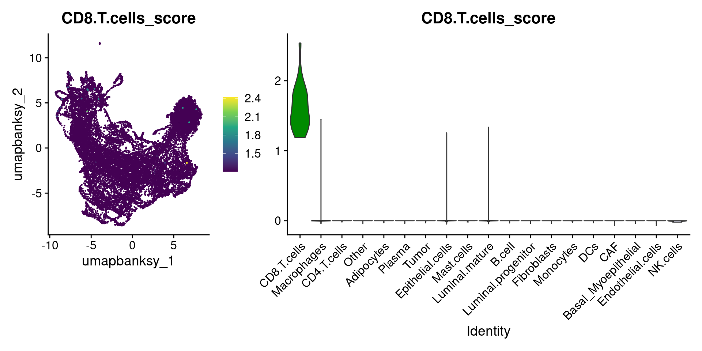
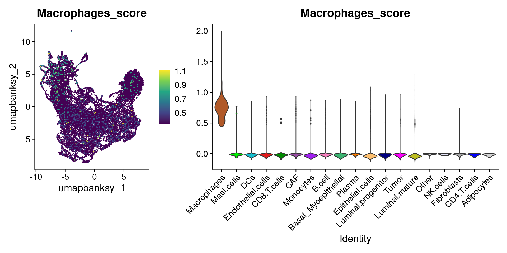
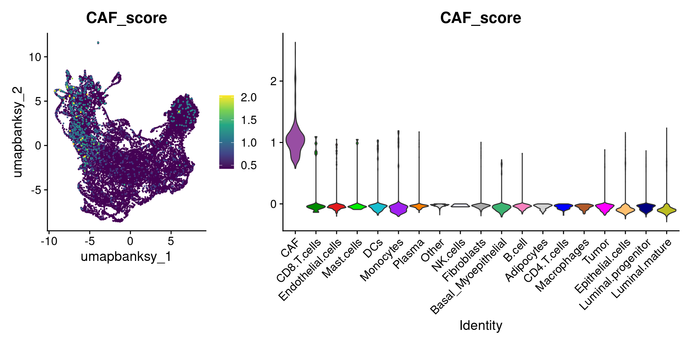
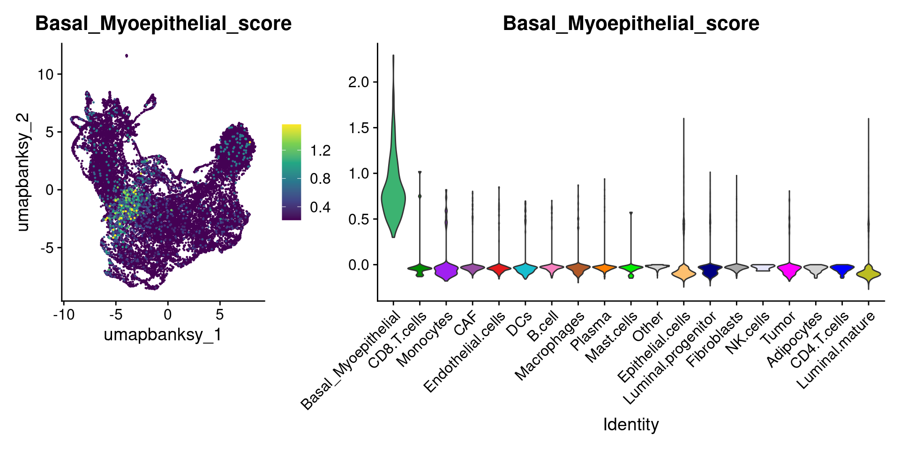
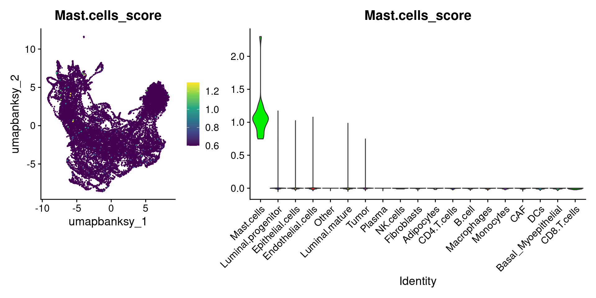
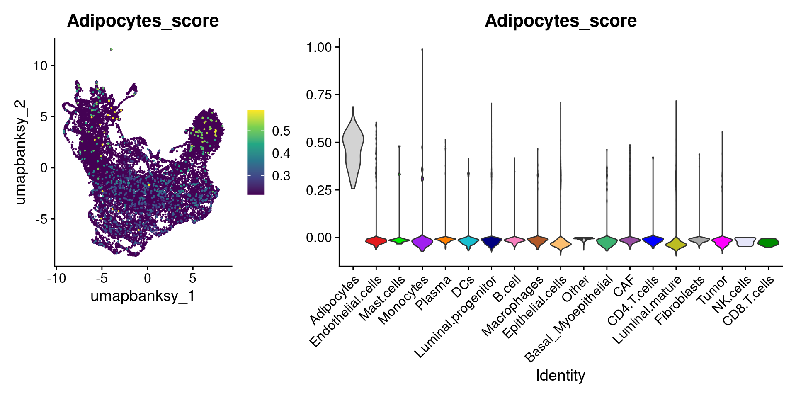
We can also use lapply() to loop through each cell type and plot it on the image
celltype_plots <- lapply(X = celltypes_to_plot, FUN = function(ct) {
# Subset object for the current cell type
subsetobject <- object[, object$cell_type == ct]
# Generate the SpatialDimPlot
p <- SpatialDimPlot(
subsetobject,
group.by = "cell_type",
pt.size.factor = pt_size_factor + 5, # Slightly higher
label = FALSE,
image.alpha = 0.2,
alpha = c(1, 0.2),
cols = celltype_cols
) +
NoLegend() +
ggtitle(ct) +
theme(plot.title = element_text(hjust = 0.5, face = "bold", size = 12))
return(p)
})
names(celltype_plots) <- celltypes_to_plotNow we have a list of cell type specific plots
celltype_plots$Fibroblasts + celltype_plots$Luminal.matureWe can wrap them all in a single patchwork:
# Combine all plots into a grid
final_plot <- wrap_plots(celltype_plots, ncol = 5)
# Display the final combined plot
final_plotAdvanced Analysis
Pseudotime
Now we will subset for only epithelial cells and run pseudotime analysis using Monocle3
Subset for epithelial cells
Subset the data to the cell types of interest
# Subset for epithelial cells only
object_epi <- subset(
object,
idents = c(
"Luminal.progenitor",
"Luminal.mature",
"Tumor",
"Basal_Myoepithelial"
)
)
DefaultAssay(object_epi) <- "Spatial.008um"Because we’ve subset, we’ll reperform FindVariableFeatures(), as the features that are variable across epithelial cells only may differ from those in the entire dataset
object_epi <- FindVariableFeatures(object_epi)
object_epiAn object of class Seurat
40170 features across 10352 samples within 3 assays
Active assay: Spatial.008um (18085 features, 2000 variable features)
3 layers present: counts, data, scale.data
2 other assays present: BANKSY, sketch
6 dimensional reductions calculated: pca.banksy, umap.banksy, pca.sketch, umap.sketch, full.pca.sketch, full.umap.sketch
1 spatial field of view present: slice1.008umRerun the Banksy workflow on this subset
# Run Banksy
object_epi <- RunBanksy(object_epi,
lambda = 0.8,
verbose = TRUE,
assay = "Spatial.008um",
slot = "data",
features = "variable",
k_geom = 24
)
object_epi <- RunPCA(object_epi,
assay = "BANKSY",
reduction.name = "pca.banksy",
features = rownames(object_epi),
npcs = 20
)
ElbowPlot(object_epi, reduction = "pca.banksy")object_epi <- FindNeighbors(object_epi,
reduction = "pca.banksy",
dims = 1:15
)
object_epi <- FindClusters(object_epi,
cluster.name = "banksy_cluster",
resolution = 0.15
)Modularity Optimizer version 1.3.0 by Ludo Waltman and Nees Jan van Eck
Number of nodes: 10352
Number of edges: 249083
Running Louvain algorithm...
Maximum modularity in 10 random starts: 0.9291
Number of communities: 9
Elapsed time: 0 secondsobject_epi <- RunUMAP(object_epi,
reduction = "pca.banksy",
reduction.name = "umap.banksy",
return.model = T,
dims = 1:15
)Now we can see what this looks like
p2 <- SpatialDimPlot(object_epi,
group.by = "banksy_cluster",
pt.size.factor = pt_size_factor,
label = F,
label.size = 5,
image.alpha = 0.2,
alpha = c(1, 1)
) +
scale_fill_manual(values = distinct_palette) +
ggtitle("Banksy Neighborhood Clustering") +
theme(legend.key.size = unit(0.5, "cm")) +
guides(fill = guide_legend(override.aes = list(size = 5)))
p3 <- DimPlot(object_epi,
group.by = "banksy_cluster",
reduction = "umap.banksy",
label = TRUE,
label.size = 2,
raster = FALSE
) +
scale_color_manual(values = distinct_palette) +
ggtitle("Banksy Neighborhood Clustering") +
theme(legend.key.size = unit(0.5, "cm")) +
guides(fill = guide_legend(override.aes = list(size = 5)))
final_plot <- wrap_plots(p2, p3, ncol = 2)
final_plot
Monocle3 Analysis
Now we run the monocle3 pseudotime analysis tool. First we create the monocle3 specific cell_data_set object. See the documentation for more information.
library(monocle3)
# Create Monocle CDS
expression_matrix <- object_epi@assays[["Spatial.008um"]]@layers[["counts"]]
colnames(expression_matrix) <- colnames(object_epi@assays[["Spatial.008um"]])
rownames(expression_matrix) <- rownames(object_epi@assays[["Spatial.008um"]])
metadata <- object@meta.data[colnames(expression_matrix), ]
# Monocle3 complains otherwise
metadata$sample_name <- NULL
gene_annotation <- data.frame(gene_short_name = rownames(expression_matrix))
rownames(gene_annotation) <- rownames(expression_matrix)
cds <- new_cell_data_set(expression_matrix,
cell_metadata = metadata,
gene_metadata = gene_annotation
)
cdsclass: cell_data_set
dim: 18085 10352
metadata(1): cds_version
assays(1): counts
rownames(18085): SAMD11 NOC2L ... MT-ND6 MT-CYB
rowData names(1): gene_short_name
colnames(10352): s_008um_00594_00250-1 s_008um_00549_00222-1 ...
s_008um_00603_00164-1 s_008um_00548_00195-1
colData names(31): orig.ident nCount_Spatial.008um ... cell_type
Size_Factor
reducedDimNames(0):
mainExpName: NULL
altExpNames(0):Now, we run preprocessing, dimension reduction, cell clustering and learn the cell principal graph within the monocle3 framework
cds <- preprocess_cds(cds, num_dim = 10)
cds <- reduce_dimension(cds)
cds <- cluster_cells(cds,
reduction_method = "UMAP",
max_clusters = 6
)
cds <- learn_graph(cds, use_partition = F)Let’s see what the UMAP looks like with the celltypes
plot_cells(cds,
show_trajectory_graph = FALSE,
label_groups_by_cluster = FALSE,
label_branch_points = FALSE,
label_principal_points = FALSE,
color_cells_by = "cell_type"
) +
scale_color_manual(values = epi_type_cols) +
theme(legend.position = "right")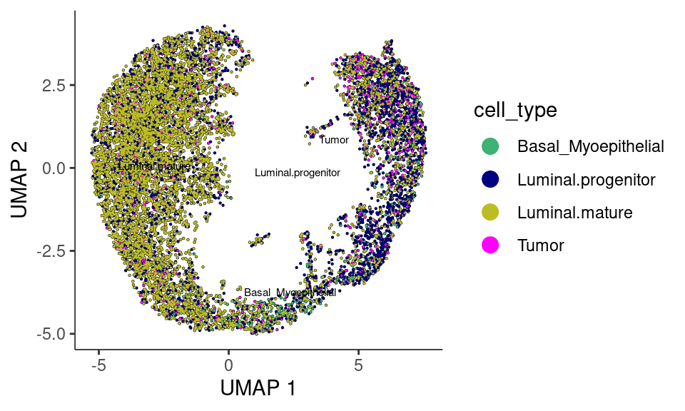
As per monocle3’s documentation: It’s often desirable to specify the root of the trajectory programmatically, rather than manually picking it. The function below does so by first grouping the cells according to which trajectory graph node they are nearest to. Then, it calculates what fraction of the cells at each node come from the earliest time point. Then it picks the node that is most heavily occupied by early cells and returns that as the root.
# a helper function to identify the root principal points:
get_earliest_principal_node <- function(
cds,
time_bin = c("Luminal.mature", "Luminal.progenitor")) {
cell_ids <- which(colData(cds)[, "cell_type"] == time_bin)
closest_vertex <-
cds@principal_graph_aux[["UMAP"]]$pr_graph_cell_proj_closest_vertex
closest_vertex <- as.matrix(closest_vertex[colnames(cds), ])
root_pr_nodes <-
igraph::V(principal_graph(cds)[["UMAP"]])$name[as.numeric(names
(which.max(table(closest_vertex[cell_ids, ]))))]
root_pr_nodes
}
cds <- order_cells(cds, root_pr_nodes = get_earliest_principal_node(cds))Now let’s plot the cells with pseudotime overlaid. We can create a nice patchworked plot
p0 <- plot_cells(cds,
show_trajectory_graph = FALSE,
label_groups_by_cluster = FALSE,
label_branch_points = FALSE,
label_principal_points = FALSE,
color_cells_by = "cell_type"
) +
theme(legend.position = "right") +
scale_color_manual(values = epi_type_cols) +
labs(title = "Cell Type", color = NULL)
p1 <- plot_cells(cds,
color_cells_by = "pseudotime",
label_cell_groups = FALSE,
label_leaves = FALSE,
label_branch_points = FALSE,
graph_label_size = 1.5
) +
labs(title = "Pseudotime")
p2 <- plot_cells(cds,
color_cells_by = "cluster",
label_groups_by_cluster = F, # Ensures clusters are labeled
label_leaves = FALSE,
label_branch_points = FALSE,
group_label_size = 4
) +
scale_color_manual(values = distinct_palette) +
theme(legend.position = "right") +
labs(title = "Monocle3 Cluster")
p3 <- plot_cells(cds,
color_cells_by = "banksy_cluster",
label_groups_by_cluster = FALSE,
label_leaves = FALSE,
label_branch_points = FALSE,
group_label_size = 4
) +
scale_color_manual(values = distinct_palette) +
theme(legend.position = "right") +
labs(title = "Banksy Cluster")
pfinal <- p0 + p1 + p2 + p3 + plot_layout(ncol = 2)
pfinalSplit by cell type with pseudotime overlaid
plot_cells(cds,
color_cells_by = "pseudotime",
label_groups_by_cluster = F,
label_leaves = F,
label_branch_points = F
) +
facet_wrap(~cell_type, nrow = 2) +
scale_color_gradientn(
colors = c("blue3", "palegreen3", "yellow", "tomato", "firebrick")
) +
labs(color = "Pseudotime")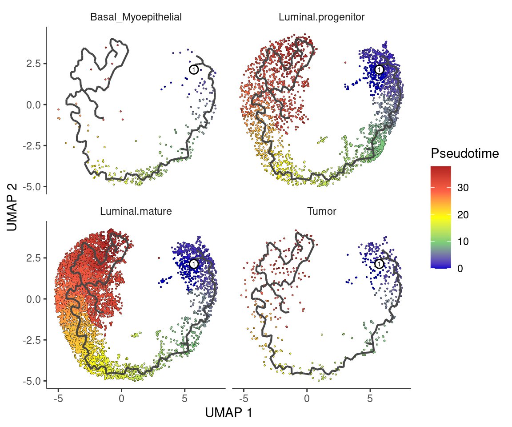
Split by banksy clusters
plot_cells(cds,
color_cells_by = "pseudotime",
label_groups_by_cluster = F,
label_leaves = F,
label_branch_points = F
) +
facet_wrap(~banksy_cluster, ncol = 4) +
scale_color_gradientn(
colors = c("blue3", "palegreen3", "yellow", "tomato", "firebrick")
) +
labs(color = "Pseudotime")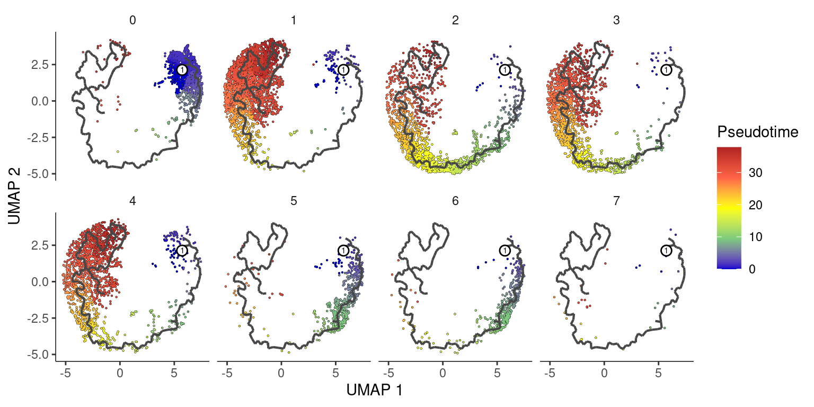
Add this back to our original object
clusters <- cds@clusters@listData[["UMAP"]][["clusters"]]
pseudotime <- cds@principal_graph_aux@listData[["UMAP"]][["pseudotime"]]
object_epi <- AddMetaData(object_epi,
metadata = clusters,
col.name = "monocle3_cluster"
)
object_epi <- AddMetaData(object_epi,
metadata = pseudotime,
col.name = "monocle3_pseudotime"
)Deal with infinite pseudotime values
## Plot
DefaultAssay(object) <- "Spatial.008um"
Idents(object) <- "monocle3_cluster"
summary(object_epi$monocle3_pseudotime) Min. 1st Qu. Median Mean 3rd Qu. Max.
0.00 9.50 23.99 20.91 31.20 37.85 max_finite <- max(object_epi$monocle3_pseudotime[is.finite(object_epi$monocle3_pseudotime)], na.rm = TRUE)
object_epi$monocle3_pseudotime[is.infinite(object_epi$monocle3_pseudotime)] <- max_finiteFeaturePlot(object_epi, features = "monocle3_pseudotime") +
scale_color_gradientn(
colors = c("blue3", "palegreen3", "yellow", "tomato", "firebrick"),
name = "monocle3_pseudotime"
) +
ggtitle("Monocle Pseudotime") +
theme(
legend.key.size = unit(0.4, "cm")
)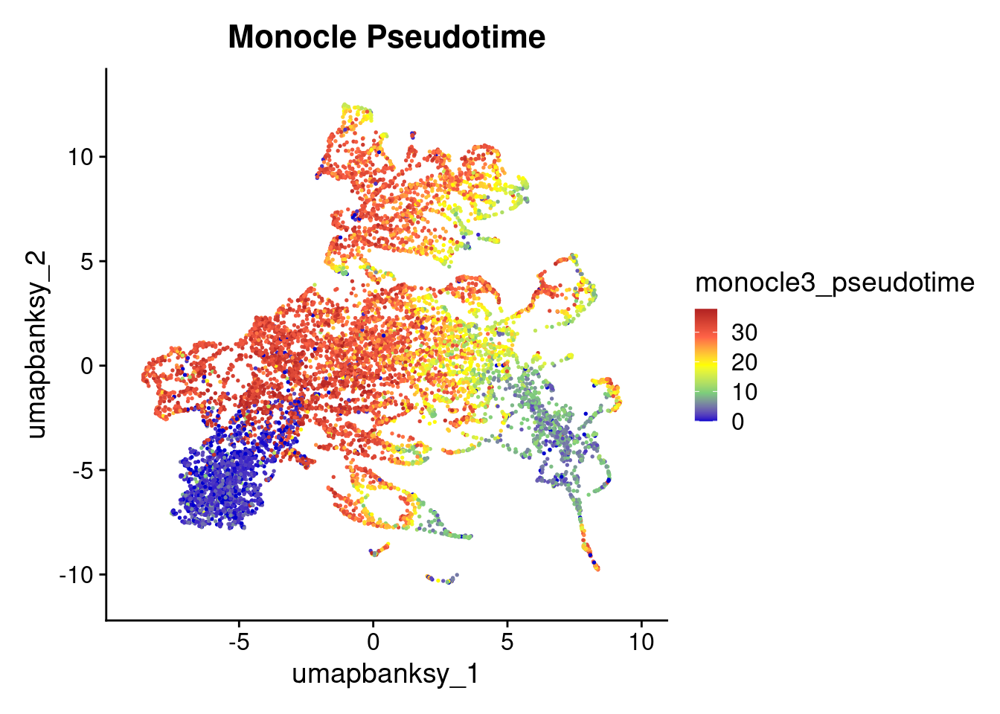
# Generate the SpatialDimPlot
SpatialFeaturePlot(
object_epi,
features = "monocle3_pseudotime",
pt.size.factor = pt_size_factor,
image.alpha = 0.2,
alpha = c(1, 1)
) +
scale_color_gradientn(colors = c("blue3", "palegreen3", "yellow", "tomato", "firebrick")) +
ggtitle("Monocle Pseudotime") +
theme(
legend.position = "right",
legend.key.size = unit(0.5, "cm")
) +
labs(color = "pseudotime")
DefaultAssay(object) <- "Spatial.008um"
Idents(object) <- "monocle3_cluster"
p2 <- SpatialDimPlot(object_epi,
group.by = "monocle3_cluster",
pt.size.factor = pt_size_factor,
label = F,
label.size = 5,
image.alpha = 0.2,
alpha = c(1, 1)
) +
scale_fill_manual(values = distinct_palette) +
ggtitle("Monocle3 Clustering") +
theme(legend.key.size = unit(0.5, "cm")) +
guides(fill = guide_legend(override.aes = list(size = 5)))
p3 <- DimPlot(object_epi,
reduction = "umap.banksy",
label = TRUE,
label.size = 2,
raster = FALSE
) +
scale_color_manual(values = distinct_palette) +
ggtitle("Monocle3 Clustering") +
theme(legend.key.size = unit(0.5, "cm")) +
guides(fill = guide_legend(override.aes = list(size = 5)))
final_plot <- wrap_plots(p2, p3, ncol = 2)
final_plot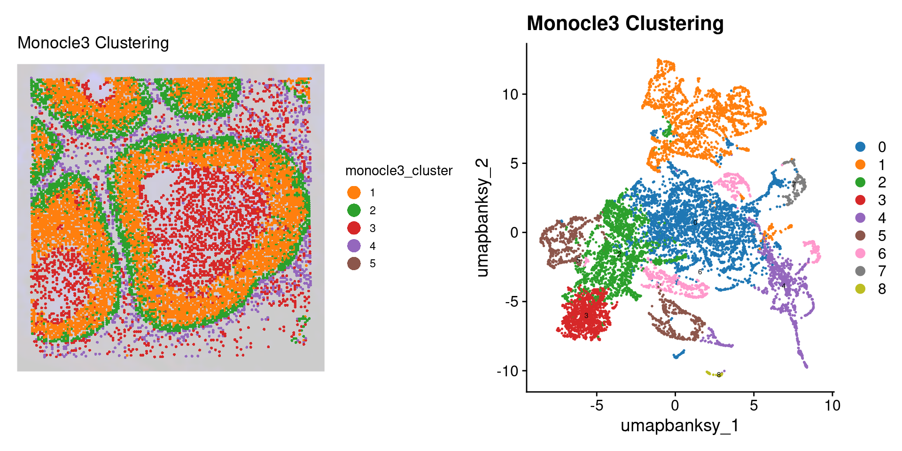
Let’s see how pseudotime breaks down by these different variables. We use fct_reorder() from the forcats package to reprder our x-axis variables by the median pseudotime
library(forcats)
object_epi@meta.data %>%
ggplot(aes(x = fct_reorder(cell_type, pseudotime, median), y = pseudotime)) +
geom_violin(aes(fill = cell_type), scale = "width", show.legend = F) +
geom_boxplot(width = 0.1) +
scale_fill_manual(values = epi_type_cols) +
labs(x = "Cell Type", y = "Pseudotime") +
guides(x = guide_axis(angle = 45)) +
theme_classic()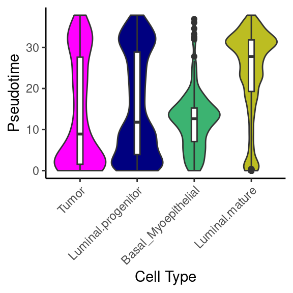
object_epi@meta.data %>%
ggplot(aes(x = fct_reorder(banksy_cluster, pseudotime, median), y = pseudotime)) +
geom_violin(aes(fill = banksy_cluster), scale = "width", show.legend = F) +
geom_boxplot(width = 0.1) +
scale_fill_manual(values = distinct_palette) +
labs(x = "Banksy Cluster", y = "Pseudotime") +
theme_classic()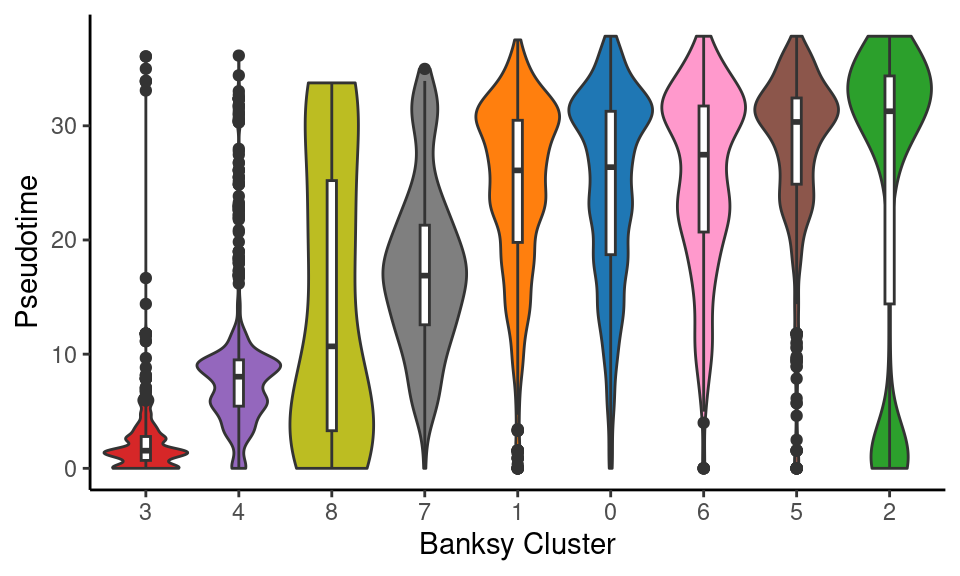
object_epi@meta.data %>%
ggplot(aes(x = fct_reorder(monocle3_cluster, pseudotime, median), y = pseudotime)) +
geom_violin(aes(fill = monocle3_cluster), scale = "width", show.legend = F) +
geom_boxplot(width = 0.1) +
scale_fill_manual(values = distinct_palette) +
labs(x = "Monocle3 Cluster", y = "Pseudotime") +
theme_classic()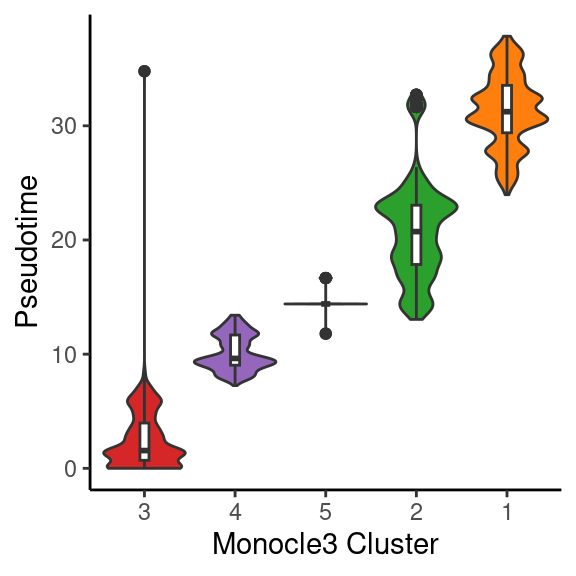
Let’s extract csv files of the cell types and clusters to add to Loupe Browser
outdir <- "data/"
sample_name <- "Visium_DCIS"
metadata <- object@meta.data[, c("seurat_cluster.projected", "banksy_cluster", "cell_type")] %>%
tibble::rownames_to_column(var = "CellID")
export_cluster_proj <- metadata[, c("CellID", "seurat_cluster.projected")]
export_cluster_banksy <- metadata[, c("CellID", "banksy_cluster")]
export_celltype <- metadata[, c("CellID", "cell_type")]
# Write to CSV
write.csv(export_cluster_proj, file = file.path(outdir, paste0(sample_name, "_cluster_proj.csv")), row.names = FALSE)
write.csv(export_cluster_banksy, file = file.path(outdir, paste0(sample_name, "_cluster_banksy.csv")), row.names = FALSE)
write.csv(export_celltype, file = file.path(outdir, paste0(sample_name, "_cell_type.csv")), row.names = FALSE)